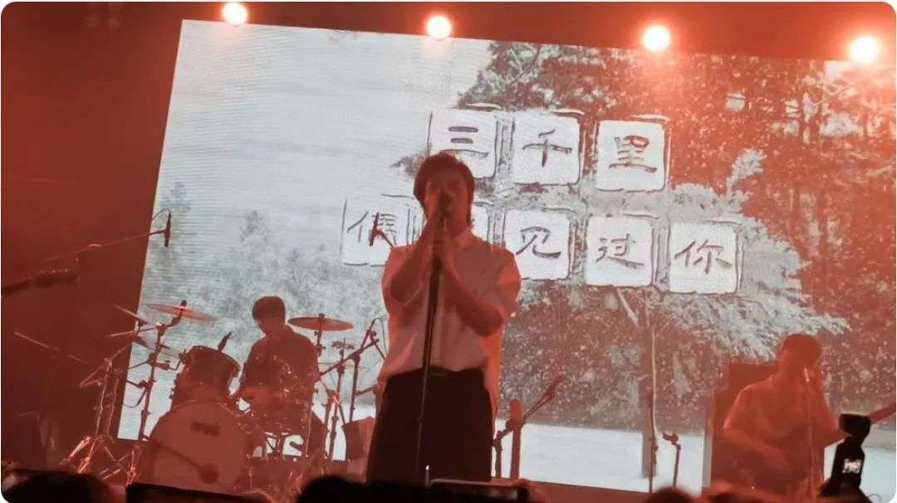

当前位置：
首页
>
简谱大全
>本文
漠河舞厅
作者：康仔 时间： 2022-08-09
设置音长：
2秒
3秒
5秒
正常版

CFFGH-I-- JHJJJLJ-
我从没有见过 极光出现的村落
JJIIIJK- --EJJJIG-
也没有见过有人 在深夜放烟火
FGHIJ-HJH-- JJJLJ-
晚星就像你的眼睛 杀人又放火
JJIIIJK --EJJIG
你什么都没有说 野风惊扰我
M--JF --FLK--JK-
三千里 偶然见过你
L--IE --ELJ--K --JKJ
花园里 有裙翩舞-- 起
M--JF --FLK--JK-
灯光底 抖落了晨曦
KJKJKKJK(JK)J--
在1980的漠河(舞)厅
EEEFG
如果有时间
CJGIHHGH
你会来看一看我吧
HHHIEIEI
看大雪如何衰老的
IIKKJJIJ
我的眼睛如何融化
JJJIIIJK
如果你看见我的话
KKLHHHIJ-
请转过身去再惊讶
JJIIJJ
我怕我的眼泪
MJIHGHF --GH--F-
我的白发像羞耻 的笑话
FFFGHIJHJJJLJ-
我从没有见过极光出现的村落
JJIIIJK- --EJJJIG-
也没有见过有人 在深夜放烟火
FGHIJ- --HJHJJJLJ-
晚星就像你 的眼睛杀人又放火
JJIIIJK --EJJIG
你什么都不必说 野风惊扰我
M--JF --FLK--JK-
可是你 惹怒了神明
L--MN --LIK--JJ
让你去 还那么年轻
J--HF --CJI--JK-
都怪你 远山冷冰冰
KJKJK----JK(JK)J--
在一个人的 漠河(舞)厅
EEEFG
如果有时间
CJGIHHGH-
你会来看一看我吧
HHHIEIEI-
看大雪如何衰老的
IIKKJJIJ-
我的眼睛如何融化
JJJIIIJK
如果你看见我的话
KKLHHHIJ-
请转过身去再惊讶
JJIIJ-J
我怕我的眼泪
MJI-HGHFFGF-
我的白发像羞耻的笑话
EEEFG
如果有一天
CJGIHHGH-
我的信念忽然倒塌
HHHIEIEI-
城市的花园没有花
IIKKJJIJ-
广播里的声音嘶哑
JJJIIIJK
如果真有这天的话
KKLJJJNO-
你会不会奔向我啊
ON--NJM--
尘封入海吧
ON--NJM--
尘封入海吧
自助钢琴